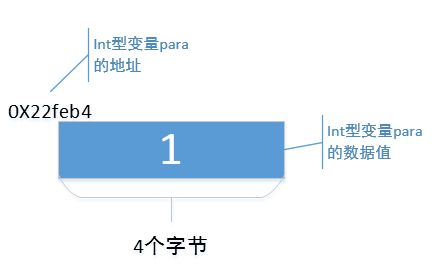
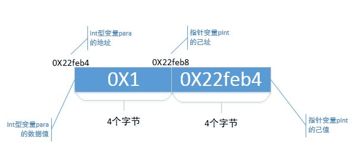
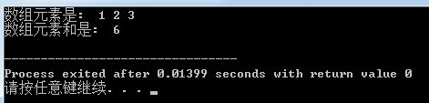

In this article, I summarize the dimensions of pointers in four Chinese characters: "Two Selves and Three Others"! It doesn't read smoothly or rhyme at all, what kind of thing is that? This "Two Selves and Three Others", expanded, is: self-address, self-value, other-value, other-address, and other-type.
I think we can talk about pointers from these 5 dimensions. But before that, I wrote a program that includes all the "Two Selves and Three Others" dimensions of pointers, and then I will explain the meaning of each dimension one by one. See if that's the case.
In most scenarios where pointers are used, these 5 dimensions should be enough to help you understand. However, in some special scenarios of using pointers, the 5-dimension method may not help you.
Warning: long article ahead. If you become impatient, you can bookmark this article and continue reading when you have time.
1. Program Code
1.1. Code
Example
The running result is as follows:

In my articles, when I talk about things I understand, I like to use very simple programs to illustrate. So those experts who think that a point must be illustrated with an inscrutable program, or who look down on low-level programs, please ignore me ^_^.
2.2. int variable para
In the program:
int para = 1;
printf("变量para自己的地址是: 0X%x\n", ¶);
printf("变量para自己的值是: 0X%x\n", para);
The program defines variable para, which has its own data value and its own storage address; these are easy to understand. From the output, variable para's own data value is hexadecimal "0X1", and its address is hexadecimal "0X22feb4". In other words, in memory, the storage space starting at address "0X22feb4" has 4 bytes storing a data value "0X1". On my machine, an int variable occupies 4 bytes; on your machine it may be different.
Everyone understands the int variable para. Next, I will draw a schematic diagram to show how variable para is stored in memory, as follows:

Next, let's talk about the concept of "Two Selves and Three Others".
2. Two Selves and Three Others
"Two Selves and Three Others", expanded, is: self-address, self-value, other-value, other-address, and other-type.
2.1. Self-address
2.1.1 The concept of "self-address"
"Self-address" is short for "one's own address". As a variable, pointer pInt, like int variable para, also needs a storage space in memory, and this storage space also has a starting address; that is, pointer variable pInt also has its own address. As mentioned above, variable para's address is "0X22feb4". So, what is pointer variable pInt's address?
2.1.2 Obtaining the "self-address"
We have all learned that "&" is an address-of operator. In the program:
printf("指针变量pInt自己的地址是: 0X%x\n", &pInt);
It obtains pointer variable pInt's address through "&". From the output, pointer variable pInt's address is "0X22feb8". On my machine, pointer variable pInt also occupies 4 bytes, so pointer variable pInt is stored in the 4-byte space starting at address "0X22feb8".
2.1.3 Code notation for the "self-address"
In code, a common way to represent pointer variable pInt's "self-address" is:
&pInt;
Now let's refine that schematic diagram by adding pointer variable pInt's "self-address" to show how pointer variable pInt is stored in memory.

"Self-address" is just this. You see, nothing particularly difficult, right?
2.2 Self-value
2.2.1 The concept of "self-value"
"Self-value" is short for "one's own data value". As a variable, pointer pInt, like variable para, also has its own data value.
2.2.2 Obtaining the "self-value"
As mentioned above, variable para's own data value is "1". Then what is pointer variable pInt's own data value? In the program:
pInt = ¶
printf("指针变量pInt自己的值是: 0X%x\n", pInt);
Through the "&" operator, I assigned variable para's address value to pointer variable pInt, and used printf to output pointer variable pInt's data value. From the output, pointer variable pInt's own data value is "0X22feb4". Let's also note that variable para's address is also "0X22feb4", so,
pInt = ¶
The essence of this statement is to give variable para's address to pointer variable pInt's self-value, thus binding pointer variable pInt and variable para together.
As mentioned in "self-address", pointer pInt's data value is stored in the 4 bytes of memory starting at address "0X22feb8". That is to say, the 4 bytes of memory starting at address "0X22feb8" are used to store a data value "0X22feb4".
2.2.3 Code notation for the "self-value"
In code, common ways to represent pointer variable pInt's "self-value" are:
pInt;
There is also this code notation:
pInt + N; pInt - N;
This notation means adding a number N to or subtracting a number N from pInt's "self-value"; this will be mentioned when the "other-type" property is discussed. There is also this notation:
pIntA - pIntB;
This notation indicates that two pointer variables use their "self-values" to do subtraction.
2.2.4 Schematic diagram
Now, continue to refine the schematic diagram above by adding pointer variable pInt's self-value.

So, generally speaking, for pointer variable pInt, the "self-value" is its own data value; for other int-type variables, it is their address.
2.3 Other-address
2.3.1 The concept of "other-address"
The concept of "other-address" means "another's address". In fact, when "self-value" was mentioned above, the concept of "other-address" was already mentioned, though not very obviously.
2.3.2 Obtaining the "other-address"
The integer variable para is stored in the 4 bytes starting at memory address "0X22feb4". In the program, I used
pInt = ¶
to give variable para's address to pointer variable pInt, thus binding pointer variable pInt and variable para together. More fundamentally, it assigns "another's address" to pointer variable pInt's "self-value". Here, the "other" in "another's address" refers to variable para, and the "address" in "another's address" refers to variable para's address. Notice: "other-address" and "self-value" are identical in data value. So, have you gained any insight?
Many textbooks say "a pointer is an address variable that stores the address of another variable". To put it bluntly, they are saying that the data value of the "other-address" dimension is equal to the data value of the "self-value" dimension; the textbooks just don't state it that clearly.
2.3.3 Schematic diagram
Let's refine that schematic diagram again, this time adding the concept of "other-address".

2.4 Other-value
2.4.1 The concept of "other-value"
"Other-value" means "another's data value".
2.4.2 Obtaining the "other-value"
In the program, I used
pInt = ¶
to give variable para's address to pointer variable pInt's "self-value", thus binding pointer variable pInt and variable para together. At this time, the "other" in "another's data value" refers to variable para, and the "data value" in "another's data value" refers to variable para's data value "1". In the program, I used
printf("指针变量pInt的他值是: 0X%x\n", *pInt);
: And this? It is actually *(pInt + 1).
2.4.3 Code syntax for "other value"
Those code patterns you often see in code, such as the *pInt pattern, what do they mean? Actually, they are computing the "other value" of the pointer variable pInt!
What about these patterns: *(pInt + 1), *pInt + 1, pInt
*(pInt + 1): If you regard pInt + 1 as another pointer, for example,
int *pTemp = pInt + 1；
then *(pInt + 1) essentially computes the "other value" of the pointer variable pTemp;
*pInt + 1: This is adding 1 to pInt's "other value";
pInt
2.4.4 Schematic diagram
Continue to improve the above schematic diagram, this time adding the concept of "other value":

2.5 Other-type
2.5.1 The concept of "other type"
"Other type" is short for "the other's type". In the program, we see that when declaring the pointer variable pInt, it is written like this:
int *pInt = NULL;
The "int" before the pointer variable pInt does not mean that pInt's "own value" is an int-type data value; rather, it means that pInt's "other value" is an int-type data value. Here, pInt's "other value" is the data value "0X1" of the variable para, so the "int" before pInt indicates that the data value "0X1" is of type "int".
In short, the type specified when declaring a pointer is used to modify the "other value", not the "own value".
Now look again, when declaring the variable para:
int para = 1;
The "int" before the variable para means that the type of para is an integer type. At this point, "int" for para is a "self type", meaning "its own type". Only the type in a pointer declaration is an "other type", the type of the pointed-to entity.
Since the "other type" is used to modify the "other value", what is the significance of adding this "other type" when declaring a pointer? Keep reading!
In the program, the following code snippet:
int arr_int[2] = {1, 2};
pInt = arr_int;
printf("arr_int第一个元素arr_int[0]的地址是: 0X%x\n", pInt);
printf("arr_int第二个元素arr_int[1]的地址是: 0X%x\n", pInt + 1);
I assign the address of an integer array arr_int to the pointer variable pInt. Then pInt's "own address" does not change, it is still 0X22feb8, but its "own value" changes.
Just now, pInt's "own value" was "0X22feb4", which is the address of variable para. Now it becomes "0X22feac", which is the address of the first element of the array arr_int. That is, the "own address" of pInt does not change, but its "own value" can be changed.
Now let's look at the difference between "pInt" and "pInt + 1". This is doing arithmetic with pInt's "own value". From the running result, pInt's "own value" at this time is "0X22feac", and pInt + 1's "own value" is "0X22feb0". Did you notice? They differ by exactly 4 bytes, and an "int" type data also happens to occupy 4 bytes.
You might think that since pInt + 1 adds 1 to the "own value", it should be "0X22feac + 1" = "0X22fead". Why is it not so? This is the trick played by the "other type" of the pointer variable pInt.
The meaning of "other type", in plain words, is: "Hey buddy pInt, your other value is an int-type data value. In the future, when you use your own value +1, +2, or -1, -2, don't foolishly add 1 byte, 2 bytes, or subtract 1 byte, 2 bytes. The int type occupies 4 bytes, so you must take 4 bytes as one unit and add 1*4 bytes, 2*4 bytes, or subtract 1*4 bytes, 2*4 bytes, got it? Oh, by the way, N in pInt + N can be positive or negative."
Of course, if "int" type data on your machine occupies 8 bytes, then pInt + 1 adds 8 bytes to the "own value", pInt + 2 adds 8 * 2 = 16 bytes to the "own value". That's the idea.
I gave another example in the program to illustrate this "other type". The program is as follows:
double *pDouble = NULL;
double arr_double[2] = {1.1, 2.2};
pDouble = arr_double;
printf("arr_double第一个元素arr_double[0]的地址是: 0X%x\n", pDouble);
printf("arr_double第二个元素arr_double[1]的地址是: 0X%x\n", pDouble + 1);
This time declare a pointer variable pDouble. Its "other type" is "double", its "own value" is the address of the array arr_double, and its "other value" is the data value "1.1" of the element arr_double
3. Summary
It's time to summarize.
I declare a pointer variable:
type *pType = NULL;
pType has 5 dimensions, namely:
pType = (own address, own value, other address, other value, other type);
3.1 Self-address: i.e., "one's own address"
As a variable, the pointer variable pType also has its own address. The common code syntax is "&pType".
The own address is not frequently used in ordinary programs. If it is used, it involves "pointer to pointer", which is another topic and will not be discussed in this article;
3.2 Self-value: i.e., "one's own data value"
As a variable, the pointer variable pType also has its own data value. The code syntax is "pType".
You can also perform addition and subtraction on the own value. Common code syntax includes "pType + N", "pType - N", "pType2 - pType1", etc.
3.3 Other-address: i.e., "another's address"
The own value of the pointer variable pType, besides representing its own data value, also represents the address of a variable of type "type" bound to pType. Generally speaking, the "own value" and the "other address" of the pointer variable pType are the same in data value.
A common way to bind a variable of type "type" to pType is: pType = &variable;
3.4 Other-value: i.e., "another's data value"
Once a variable of type "type" is bound to pType, the pointer variable pType can obtain the value of the type-type variable, i.e., the "other value", through some code syntax. Common code syntax includes "*pType", "pType->", etc.
And these code patterns: "*(pType + N)", "*(pType - N)", "pType[N]" also obtain the "other value", but it needs special explanation:
You can regard pType + N as:
type *pTemp = pType + N;
"*(pType + N)" actually computes the "other value" of the pointer variable pTemp.
Then "*(pType - N)" is easy for you to understand;
"pType[N]" is actually "*(pType + N)". Just memorize it.
3.5 Other-type: i.e., "another's type"
When declaring the pointer variable pType, the preceding "type" is not used to modify pType's "own value", but to modify the "other value". That is, "type" does not mean that pType's "own value" is a data value of type "type", but rather that pType's "other value" is a data value of type "type".
The role of the "other type" in code is mainly that when computing "pType + N" or "pType - N", pType has to add or subtract (N * sizeof(type)) bytes.
Pointers always make people dizzy, likely because you get dizzy on one or more of these 5 dimensions. Understand these 5 dimensions thoroughly, and pointers are just a paper tiger.
4. Exercises Explained
After finishing the 5 dimensions, how can we not have some hands-on exercises? Below are a few exercises, all related to pointers, all of which make beginners dizzy to the point of giving up. I use these 5 dimensions to interpret these problems. See if it is a bit easier!
4.1 Summing Array Elements
4.1.1 Program
The first example is a very common program: finding the sum of the elements of an array. The program is as follows:
Example
The program is very simple. It first outputs all elements of the array, then calculates the sum of all elements. The running result is as follows:

4.1.2 Interpretation with "two own, three other"
4.1.2.1 Outputting array elements
When outputting array elements, the code is as follows:
pArr = arr;
printf("%d ", pArr[index]);
This line of code is equivalent to
pArr = arr;
printf("%d ", *( pArr + index));
Here, the "own value" and the "other type" are used for addition, and the "other value" is used to obtain array elements.
"Own value": The code first assigns the data value of the array name arr to pArr's "own value". And what is the data value of the array name arr? It is the address of the element arr
;
int *pTemp = pArr + index;
;
"Other type": the other type of pArr is "int". For pArr + index, how many bytes are added to pArr's own value? Since the other type of pArr is int, then pArr + index means pArr's own value plus index * sizeof(int) bytes, right!
pArr: can be written as pArr + 0, that is, adding 0 * 4 = 0 bytes. At this time, the own value of pTemp is the address of arr
pArr + 1: add 1 * 4 = 4 bytes. At this time, the own value of pTemp is the address of arr
pArr + 2: add 2 * 4 = 8 bytes. At this time, the own value of pTemp is the address of arr
In this way, pArr + index traverses to the addresses of all elements of the array.
You will find that the own value of pTemp keeps changing; the own value and own address of pArr remain unchanged.
"Other value": Since pArr + index can traverse to the addresses of all elements of the array, then using *(pArr + index), that is, *pTemp, can get the other value of pTemp, and thus traverse to the values of all elements of the array!
4.1.2.2 Summing array elements
The code used to sum array elements is as follows:
sum = sum + *(pArr + index);
Based on my analysis of outputting array elements just now, you should all be clear about how pArr works in this code!
pArr + index is still using the own value of pArr for addition, obtaining the own value of a temporary pointer pTemp. This own value of pTemp is the address of each array element;
Then use *(pArr + inedx), that is, *pTemp, to obtain the other value of the temporary pointer pTemp, which is the value of each element.
Finally, add up each other value of pTemp to calculate the sum of the array elements.
4.1.2.3 Summary
Try to understand common code expressions such as pArr, pArr + index, *(pArr + index), pArr[index], *pArr + index from the perspective of "two owns and three others"!
4.2 Pointer Array
A pointer array is something that combines pointers and arrays. For beginner friends, it can be relatively difficult to understand. Pointer arrays are a relatively large topic. For related concepts, please refer to general C language textbooks. Here, we only use the concept of "two owns and three others" to explain the pointer-related concepts in the program.
4.2.1 Program
For pointer arrays, I gave an example as follows:
Example
The running result is as follows:

4.2.2 Interpretation with "two owns and three others"
4.2.2.1 Output all strings
First look at the definition of the pointer array:
char *arr[3] = {"abc", "def", "ghi"};
Each element of this array seems to be a string, but in essence it is like this:
char *pChar1 = "abc", *pChar2 = "def", *pChar3 = "ghi";
char *arr[3] = {pChar1, pChar2, pChar3};
Each element of array arr is actually a pointer whose "other type" is "char".
arr
printf("%s ", arr[0]);
In essence:
printf("%s ", pChar1);
Use the own value (or other address) of pChar1 to output 'b' and 'c' one by one starting from the address of character 'a'.
pChar2 and pChar3 can be understood in the same way.
4.2.2.2 Output each character of the first string "abc"
The code is as follows:
char *pArr = arr[0];
printf("%c ", *(pArr + index) );
Assign arr
pArr + index is to add index * sizeof(char) bytes to the own value of pArr, giving a temporary pointer variable pTemp:
char *pTemp = pArr + index;
The own value (or other address) of this pointer pTemp will be the addresses of characters 'a', 'b', 'c' in turn; that is, the other value of pTemp will also be characters 'a', 'b', 'c' in turn. In this way, the pointer pTemp will traverse each character of the string "abc" in turn.
4.3 Linked List
Linked lists use pointers most frequently. Operations such as inserting nodes and deleting nodes will always encounter code like the following:
p2 = p1->next; p1->next = p3->next; ......
What the hell is this? So dizzy! This next pointer, that next pointer, jumping back and forth. Damn, my head is full of paste. Haha, here comes the pointer 5-dimension analysis method! However, regarding linked lists, I think I'd better write another article to explain them. After I finish explaining linked lists, I'll come back to these next pointers. Let me tell you, the essence of linked lists is just like that. Once you understand it, linked lists are even more of a paper tiger than pointers.
Author: 石家的鱼
Source: https://zhuanlan.zhihu.com/p/27974028